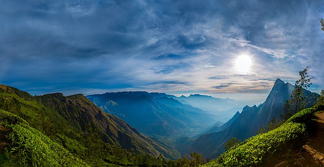
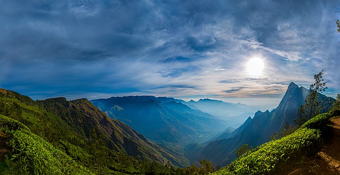

Explore Kodaikkanal!
Kodaikanal is referred to as the "Princess of Hill stations" . Kodaikanal has several scenic natural attractions like Bryant Park,
Kodaikanal Lake, Green Valley View, Pillar Rocks, Dolphin's Nose, Silver Cascade, View from Coaker's Walk etc.
 



Deals For You!
The Meadows
GRT Hotels
Hotel JC